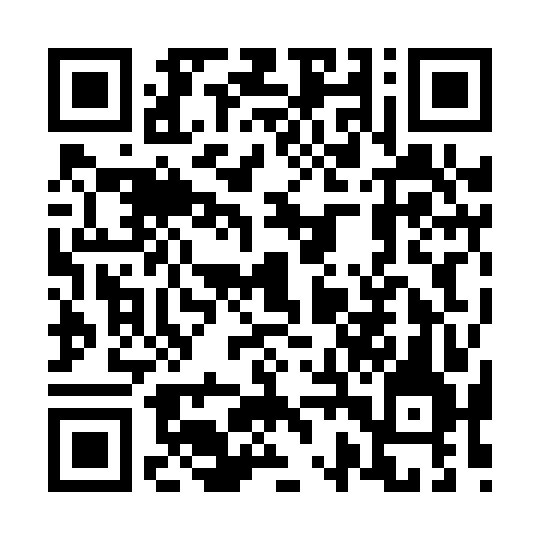

CS OUPEYE · RÉSERVE DU GARAGE
Il manque du matériel ?
Scannez ce QR code pour demander le réapprovisionnement de la réserve.

Indiquez votre nom, ce qu’il manque et l’urgence.
https://mycro99.github.io/CRBO/demande-materiel.htmlCS OUPEYE · RÉSERVE DU GARAGE
Scannez ce QR code pour demander le réapprovisionnement de la réserve.

Indiquez votre nom, ce qu’il manque et l’urgence.
https://mycro99.github.io/CRBO/demande-materiel.html